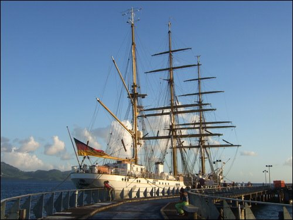
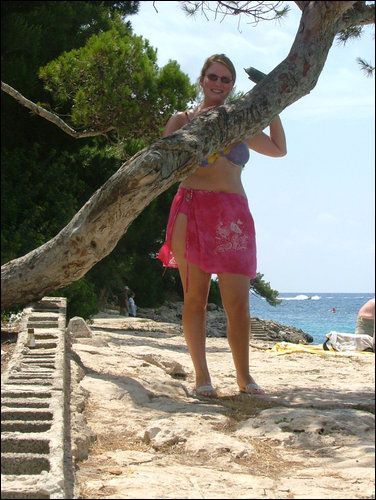
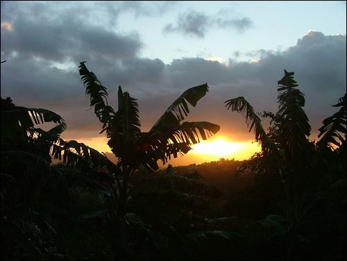
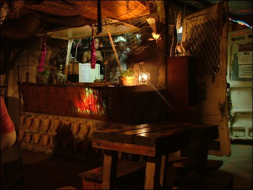
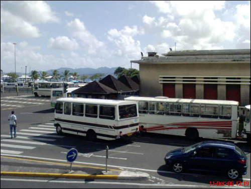
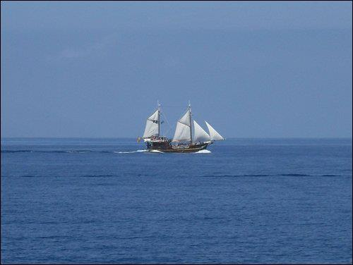
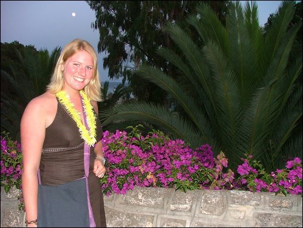
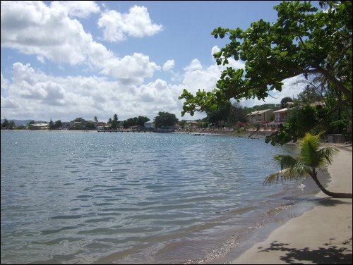

Not many people can say they actually lived in the Caribbean — but Nicola did, spending a full year in Martinique from 2006 to 2007, working as a teacher in two local high schools. Sun, sand and sea, a few tropical storms thrown in for good measure, and the friendliest people you will ever meet. This is not your typical tourist destination — and that is exactly what makes it so special.
What this island gave us:
A year in the Caribbean
Martinique is one of those places that gets under your skin in the best possible way. From 2006 to 2007, Nicola lived and worked on the island, teaching in two local high schools — which meant experiencing Martinique the way very few visitors ever do. Not as a tourist ticking off the highlights, but as someone embedded in daily life, getting to know the community, the culture and the rhythms of the island properly.
The people are what stand out most. Warm, generous, laid-back and endlessly welcoming — the kind of community that makes you feel at home almost immediately, even when you are a long way from Ireland and everything familiar.
Martinique is not a big tourist destination in the way some Caribbean islands are, and that is genuinely part of its charm. It has its own identity — a fascinating mix of French and Caribbean culture, incredible food, beautiful beaches and landscapes that go from white sand coastline to lush volcanic rainforest within the space of a short drive.
The tropical storms are real, the mosquitoes are very real, and the heat takes some getting used to. But once you settle in, it is the kind of place that is genuinely hard to leave.
The vibrant capital — colourful, busy and full of life. Great food, lively bars and a real French Caribbean energy that makes it unlike any other city.
From the famous white sands of Les Salines to quieter coves around the coast — the beaches here are genuinely beautiful and rarely overcrowded.
The north of the island is lush, green and dramatic — proper tropical rainforest with hiking trails, waterfalls and views that take your breath away.
One of the most dramatic volcanoes in the Caribbean — the hike to the top rewards you with spectacular views across the island on a clear day.
A brilliant fusion of French technique and Caribbean ingredients. Accras de morue, colombo, fresh seafood and the best rum punch you will ever have.
Without question the highlight of the whole experience. Warm, friendly, laid-back and genuinely welcoming — the community here is something really special.
From the harbour to the beaches, the bars to the open sea — a glimpse of what a year in Martinique actually looks like.








Where to eat, drink and have fun
Fort-de-France is the beating heart of Martinique — and it deserves more than just a quick look around. The food scene here is brilliant, the bars are lively and there is a real energy to the city that you do not always find in smaller Caribbean destinations.
From fresh seafood on the waterfront to rum-fuelled evenings in the old town, Fort-de-France rewards anyone who takes the time to explore it properly. Watch the reel for our picks on where to eat, drink and have a good time.
Fort-de-France — where to eat, drink and have fun
This tour takes you island hopping from Guadeloupe to Dominica to Martinique — one of the best ways to experience the Eastern Caribbean properly.
If you want to see more than just one island, this tour is a brilliant way to do it. You get to experience three very different Caribbean destinations — the French flair of Guadeloupe, the wild nature of Dominica and the unique charm of Martinique — all with the logistics handled so you can just enjoy it.
Disclosure: This is an affiliate link. If you book through it we may earn a small commission at no extra cost to you.
Planning your own Martinique trip? Browse activities, boat trips, day tours and more here:
Disclosure: If you book through these links we may earn a small commission at no extra cost to you.
Common questions
What to pack for Martinique
Martinique is hot and humid year-round with temperatures around 28–30°C — and tropical downpours can arrive with very little warning. Pack light and breathable, and don't underestimate the mosquitoes or the sun. These are the things we'd bring without hesitation.
Non-negotiable in Martinique. The mosquitoes are relentless, especially in the evenings and anywhere near vegetation. Pack plenty and apply it religiously.
View on Amazon →The Caribbean sun is intense — especially on the beaches and out on the water. High SPF is essential and you will get through more than you expect.
View on Amazon →Tropical storms in Martinique arrive fast and with serious intent. A waterproof pouch will save your phone when the heavens open — and they will.
View on Amazon →Breathable and cool in the heat — ideal for exploring Fort-de-France, visiting markets or heading out for dinner in the evenings.
View on Amazon →You will get through a lot of water in the heat and humidity. A reusable bottle saves money and keeps you properly hydrated all day long.
View on Amazon →Full days out on the beaches and exploring the island will drain your battery faster than you think. A power bank means you never miss a moment.
View on Amazon →Handy for maps, bookings and staying connected across the island without relying on hotel Wi-Fi or paying expensive roaming charges.
View on Amazon →Martinique uses Type D and E plugs (French standard) — different to Ireland. Don't arrive with nothing charged after a long journey.
View on Amazon →Essential if you want to explore the rainforest, hike towards Mount Pelée or just cover a lot of ground around Fort-de-France.
View on Amazon →Useful for bites, blisters and the little things that are annoying to track down on a Caribbean island. Don't leave home without one.
View on Amazon →Compact travel toiletries keep packing easy and save precious luggage space — especially useful on a multi-island trip.
Men's → Women's →Ideal for beach days, exploring towns and hiking days — light enough to carry everywhere without getting in the way.
View on Amazon →Disclosure: These are Amazon affiliate links. If you buy through them we may earn a small commission at no extra cost to you. These are all things we'd genuinely pack for a Martinique trip.
Whether you are island hopping through the Eastern Caribbean or heading straight to Martinique, this is one of those destinations that will stay with you long after you leave. Start with a tour that handles the logistics — and just enjoy it.
Affiliate disclosure: if you book through our links we may earn a small commission at no cost to you. We only recommend trips and experiences we'd be happy to stand over.